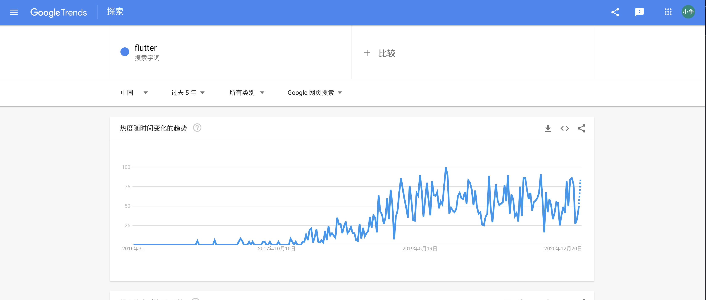
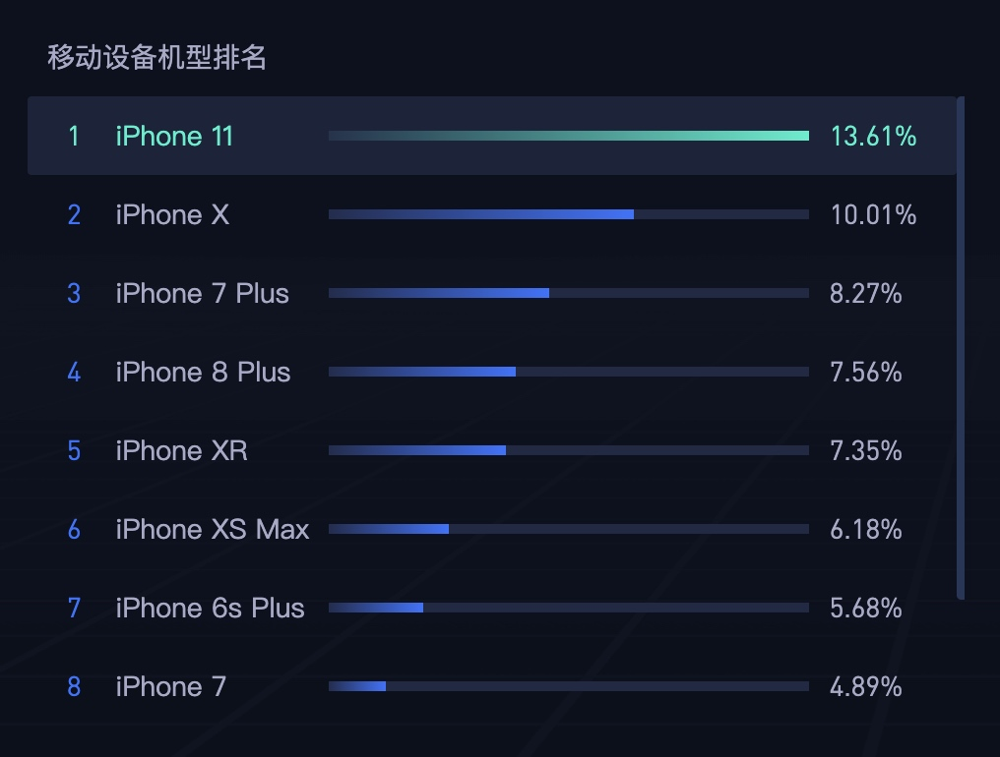
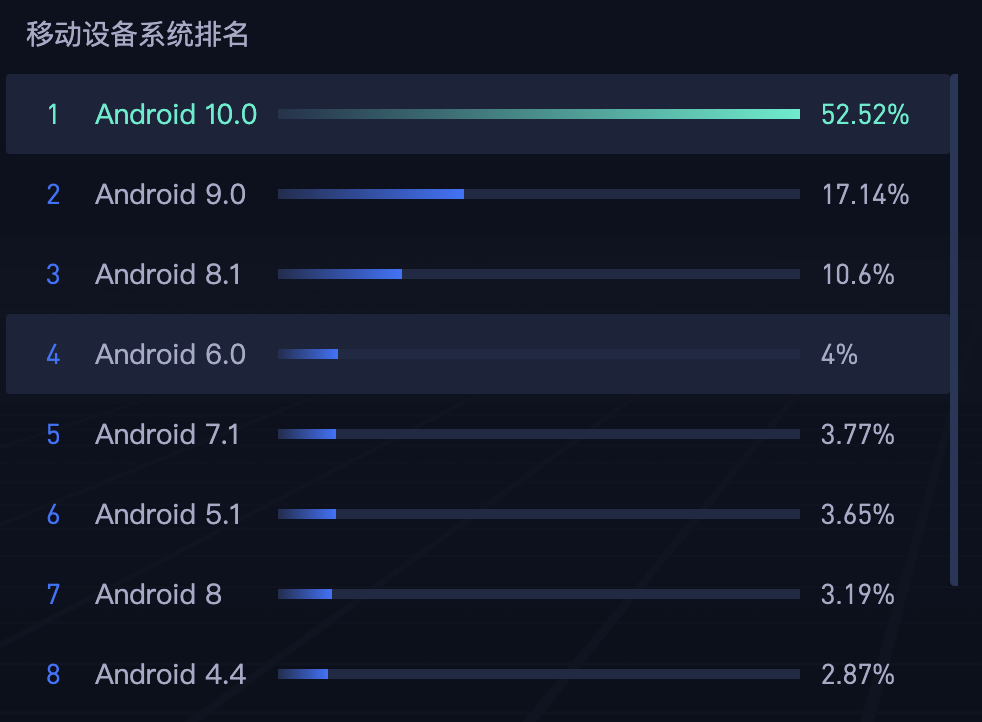
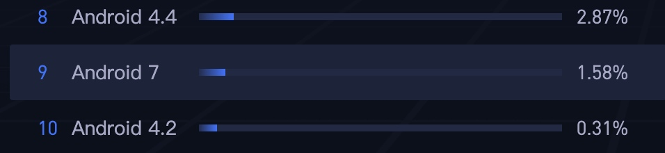

-
安装Xcode(Version 12.4)
不要去App Store下载安装，因为App Store会自动更新，为了确保Xcode版本一致需要去开发者网站下载 Apple Developer
-
安装brew
-
由于访问外网太慢，建议从gitee安装
/bin/zsh -c "$(curl -fsSL https://gitee.com/cunkai/HomebrewCN/raw/master/Homebrew.sh)" -
可以选择科大的源也可以选择清华的源，我一般用清华的源
-
-
安装rbenv
-
rbenv是 Ruby 环境管理工具
brew install rbenv -
更新配置文件
export PATH="$HOME/.rbenv/bin:$PATH" eval "$(rbenv init -)" -
我现在用的Ruby环境是2.7.1
$ cd $(PROJECT_DIR) $ rbenv install 2.7.1 $ rbenv local 2.7.1
-
-
安装Bundler
-
执行
gem install bundler命令进行，之后，再执行bundle init就可以生成一个 Gemfile 文件 -
添加CocoaPods 和 fastlane 等依赖包
source "https://rubygems.org" gem "cocoapods", "1.10.1" gem "fastlane","2.180.1"
-
-
使用脚本确认环境
# Install ruby using rbenv ruby_version=`cat .ruby-version` if [[ ! -d "$HOME/.rbenv/versions/$ruby_version" ]]; then rbenv install $ruby_version; fi # Install bunlder gem install bundler # Install all gems bundle install # Install all pods bundle exec pod install 脚本主要做了四件事情，第一步是在 rbenv 下安装特定版本的 Ruby 开发环境，然后通过 RubyGems 安装 Bunlder，接着使用 Bundler 安装 CocoaPods 和 fastlane 等依赖包，最后安装各个 Pod。这样，一个统一的项目环境就搭建完成了，接下来开发者就可以打开 项目名.xcworkspace进行开发了.
-
项目添加gitignore
可以去gitignore.io 输入Xcode，Swift等关键字生成.gitignore文件
Flutter 相关网站
三方库网站 https://pub.dev
使用Flutter 技术的App
- MOO 腾讯音乐App https://mp.weixin.qq.com/s/ChbXxcd_k6_CSvI6VxwTyg
- 闲鱼App 闲鱼Flutter技术文章专栏：https://www.zhihu.com/column/xytech 被吐槽 https://maimai.cn/web/feed_detail?fid=1573956025&efid=H20EJR0aOjBt9e_HmpcW5g&use_rn=1
- 飞猪App https://juejin.cn/post/6937254156776243231
- 美团（美团外卖App上有应用，美团主要用原生+RN） https://tech.meituan.com/tags/flutter.html
Flutter趋势
flutter热词搜索情况 https://trends.google.com/trends/explore?date=today%205-y&geo=US&q=flutter


百度指数

设备、系统使用情况
百度统计情况：https://tongji.baidu.com/research/app
苹果手机


安卓手机：


系统使用情况




结论
阿里巴巴淘系技术的回答 - 知乎 https://www.zhihu.com/question/374113031/answer/1252582543
TechLead Show 的观点 https://www.youtube.com/watch?v=AvXSFUi022s
目前存在问题：
- https://github.com/flutter/flutter/issues ，好多问题没有解决，同时也说明反馈的人多热度不错。
- 同时也能发现大厂的主要应用暂时没有使用Flutter，在新业务场景中开始尝试使用Flutter。
- 需要学习Dart语言，适应新的UI开发（大约需要一周多适应）
目前公司产品中，我认为供应链项目，食堂App（客户端和商家端）完全可以使用Flutter进行开发，iPad点菜系统我认为不太合适。Flutter在动画和手势方面比原生还是有差距，而且在老旧设备的兼容性上面Flutter还不太行。
使用Swift获取应用程序的CPU使用率和内存使用量
原文SwiftでアプリのCPU使用率とメモリ使用量を取得する
##介绍
在一个获取系统信息的方法中，一个描述CPU和内存状态的库存在于一个获取系统信息的方法中，其中Debug附带了来自XCode的CustomFlag等。
当然，还有一些方法可以获取不限于Debug版本的系统信息，但大多数都是在Objective-C中编写的。也在AppleDeveloper官方论坛上
尽管使用Swift是不可能的，但对于那些使用Objective-C 的人来说可能很难
还有答案说。
但是，没有任何优点，你可以或根本不能使用Swift。我个人认为低层实现也有以下优点。
- 受益于可选
- 提高可读性
- 更容易共享代码（易于维护维护）
所以我这次写了如何在Swift中获得CPU利用率和内存使用量。（还有关于磁盘使用情况的奖励）
动作确认环境
XCode8.3.3
Swift3.1
CPU使用率
// 必須
import Foundation
// CPU使用率を0%~100%で取得
private func getCPUUsage() -> Float {
// カーネル処理の結果
var result: Int32
var threadList = UnsafeMutablePointer<UInt32>.allocate(capacity: 1)
var threadCount = UInt32(MemoryLayout<mach_task_basic_info_data_t>.size / MemoryLayout<natural_t>.size)
var threadInfo = thread_basic_info()
// スレッド情報を取得
result = withUnsafeMutablePointer(to: &threadList) {
$0.withMemoryRebound(to: thread_act_array_t?.self, capacity: 1) {
task_threads(mach_task_self_, $0, &threadCount)
}
}
if result != KERN_SUCCESS { return 0 }
// 各スレッドからCPU使用率を算出し合計を全体のCPU使用率とする
return (0 ..< Int(threadCount))
// スレッドのCPU使用率を取得
.flatMap { index -> Float? in
var threadInfoCount = UInt32(THREAD_INFO_MAX)
result = withUnsafeMutablePointer(to: &threadInfo) {
$0.withMemoryRebound(to: integer_t.self, capacity: 1) {
thread_info(threadList[index], UInt32(THREAD_BASIC_INFO), $0, &threadInfoCount)
}
}
// スレッド情報が取れない = 該当スレッドのCPU使用率を0とみなす(基本nilが返ることはない)
if result != KERN_SUCCESS { return nil }
let isIdle = threadInfo.flags == TH_FLAGS_IDLE
// CPU使用率がスケール調整済みのため`TH_USAGE_SCALE`で除算し戻す
return !isIdle ? (Float(threadInfo.cpu_usage) / Float(TH_USAGE_SCALE)) * 100 : nil
}
// 合計算出
.reduce(0, +)
}
Float(threadInfo.cpu_usage) / Float(TH_USAGE_SCALE)已经完成了划分以确保值的精确性，因此有必要进行划分。
这CPU使用率 / スケール是因为如果你把这个表达式放入，初步完成了下面的处理。
CPU使用率 = 0.216如果存在 - > 21.6％的值，则缩放因子获得10的幂，使得CPU使用率是整数。因此，在这种情况下，比例因子是1000。（0.216 * 1000 = 216）
因此，由于这些系数系数根据值的精度而不同，因此它们必须用于每个线程的除法。
内存使用情况
// 必須
import Foundation
// 使用者が単位を把握できるようにするため
typealias MegaByte = UInt64
// 引数にenumで任意の単位を指定できるのが好ましい e.g. unit = .auto (デフォルト引数)
func getMemoryUsed() -> MegaByte? {
// タスク情報を取得
var info = mach_task_basic_info()
// `info`の値からその型に必要なメモリを取得
var count = UInt32(MemoryLayout.size(ofValue: info) / MemoryLayout<integer_t>.size)
let result = withUnsafeMutablePointer(to: &info) {
task_info(mach_task_self_,
task_flavor_t(MACH_TASK_BASIC_INFO),
// `task_info`の引数にするためにInt32のメモリ配置と解釈させる必要がある
$0.withMemoryRebound(to: Int32.self, capacity: 1) { pointer in
UnsafeMutablePointer<Int32>(pointer)
}, &count)
}
// MB表記に変換して返却
return result == KERN_SUCCESS ? info.resident_size / 1024 / 1024 : nil
}
在上面的例子中，它是MB单位，但在这种情况下ByteCountFormatter最好使用下面的。
return，resident_size获取在该点使用的实际内存使用量。*也可以在XCode中确认内存使用情况，但实际内存使用量通常会大于该值。我不知道它消耗了什么，但由于初始值只是不同，似乎通过相对观察没有问题
磁盘使用情况
// 必須(ByteCountFormatterとFileAttributeKeyで使用)
import UIKit
// ディスクスペース種別
enum DiskSpaceType {
case total
case free
case used
}
func getDiskSpace(_ type: DiskSpaceType) -> String {
// GB,MB,KB表記の文字列に変換
let byteUnitStringConverted: (Int64) -> String = { size in
ByteCountFormatter.string(fromByteCount: size,countStyle: ByteCountFormatter.CountStyle.binary)
}
switch type {
case .total:
// ディスク合計容量
return byteUnitStringConverted(totalSpace)
case .free:
// ディスク空き容量
return byteUnitStringConverted(freeSpace)
case .used:
// ディスク使用量
return byteUnitStringConverted(usedSpace)
}
}
var totalSpace: Int64 {
guard let attributes = systemAttributes,
let size = (attributes[FileAttributeKey.systemSize] as? NSNumber)?.int64Value
else { return 0 }
return size
}
var freeSpace: Int64 {
guard let attributes = systemAttributes,
let size = (attributes[FileAttributeKey.systemFreeSize] as? NSNumber)?.int64Value
else { return 0 }
return size
}
var usedSpace: Int64 {
return totalSpace - freeSpace
}
private var systemAttributes: [FileAttributeKey: Any]? {
return try? FileManager.default.attributesOfFileSystem(forPath: NSHomeDirectory())
}
关于磁盘使用情况，FileAttributeKey您可以从链接的信息中获取。computed property我认为设置它是安全的，以便总磁盘容量也会波动。
摘要
- Swift还具有高指针兼容性，因此您可以实现与Objective-C相当的层代码（有时您不能
 ）
） - 毕竟我们用Swift写了它，过程前景更好

- 写它像Swift一样很难。

参考
https://www.gnu.org/software/hurd/gnumach-doc/Thread-Information.html
https://forums.developer.apple.com/thread/64665
https://stackoverflow.com/questions/8223348/ios-get-cpu-usage-from-application
https://stackoverflow.com/questions/787160/programmatically-retrieve-memory-usage-on-iphone
公司规范
Git分支建议
开发必读http://www.ruanyifeng.com/blog/2012/07/git.html
多提交，少推送。
严格遵守：
填写本次修改内容
代码合并必须命令行合并，并且加上--no-ff参数。（文章中有详细介绍）
将 feature/develop_wangchao_打印bug 分支合并到当前分支命令如下：
git merge --no-ff feature/develop_wangchao_打印bug
与文章中的差异：
所有问题由组长来定属于紧急问题，还是特性问题。
紧急问题上线流程：预发布分支-->生产分支。
特性问题上线流程：开发分支-->预发布分支-->生产分支。（预发布分支 从 生产分支 拉取）
预发布分支 的的问题按照bug分支处理。
步骤：从 预发布分支 拉取bug分支，修改完成后合并到 预发布分支 ，测试通过后 预发布分支 合并到 生产分支 ，在生产分支打上和 预发布分支 名称一样的标签， 预发布分支 删除，bug分支 删除。
生产环境紧急问题和bug，按照bug分支处理，步骤参考 预发布分支 bug处理方式。
推荐git图形界面mac用sourcetree，windows用git tortoise，可以清晰看到提交记录图和提交人。
注意：生产分支、预发布分支分别2人有修改权限，负责代码合并，预发布分支合并到生产分支时，需要看git提交记录图，所有修改人员必须签字，说明修改部分关联的项目，分支权限定期抽查。
建议分支命名：
云端：
|----master 生产分支 |----release 预发布分支文件夹 |----master20180915 预发布分支 |----develop 开发分支 |----feature 个人分支文件夹 |----develop_wangchao_会员结账 具体个人分支 |----develop_shaochuanjun_微信结账 具体个人分支 |----fixbug bug分支文件夹 |----master20180915_wangchao_扫码点餐bug 具体个人bug分支 |----master20180915_shaochuanjun_点菜bug 具体个人bug分支能够直观看到个人分支的源分支（从哪个分支拉取的）。
feature、fixbug下的分支不允许跨源合并、跨源拉取（develop_开头的分支只能合并到develop，只能拉取develop分支），release下的分支除外。
实际上bug分支可以往预发布、开发分支合并，简单起见我们禁止跨源合并
release下的分支每次合并到master时要并行合并到develop分支。
门店：（由于shop、shop-print和海底捞一套代码比较特殊，建议和云端命名方式一样，加上前缀文件夹huoguo或haidilao）
hht-manage属于新火锅特有项目，建议按照云端命名基础上增加版本号。
|----master_v1 生产分支 |----master_v2 生产分支 |----release 预发布分支文件夹 |----master_v1_20180915 预发布分支 |----master_v2_20180915 预发布分支 |----develop 开发分支 |----feature 个人分支文件夹 |----develop_wangchao_会员结账 具体个人分支 |----develop_shaochuanjun_微信结账 具体个人分支 |----fixbug bug分支文件夹 |----master20180915_wangchao_扫码点餐bug 具体个人bug分支 |----master20180915_shaochuanjun_点菜bug 具体个人bug分支举例：
小A要做一个新功能的步骤：
1、找组长确认属于什么类型问题 ----> 2、属于特性问题 ----> 3、从 develop 拉取分支 feature/develop_A_打印功能 ----> 4、修改完成后--no-ff合并到 develop 分支测试 ----> 5、测试通过后找组长从生产分支拉取预发布分支 release/master20180919 ，把生产环境的数据库备份到预发布环境 ----> 6、组长把 feature/develop 合并到 release/master20180919 ----> 7、开发整理所有预发布环境没有的脚本交给组长 ----> 8、组长存档 master20180919.sql 后交给运维执行 ----> 9、测试通过后组长把 master20180919.sql 文件上传到 release/master20180919 分支，并合并到生产、测试环境，正式环境打上标签 master20180919 ，删除 release/master20180919 分支 ----> 10、运维正式环境执行目录下的 master20180919.sql 、打版。
注意：脚本分预制脚本（insert）、建库脚本（create、alter）
DB建议
测试环境开放读写权限，公司白名单。
生产环境云端、门店数据库，白名单访问。
预发布环境只开放读权限，脚本需交给组长备份，组长交给运维执行。建议备份文件名和 预发布分支 名保持一致，预发布分支 合并到 生产分支 时添加到 预发布分支 的SQL文件夹下，并执行相同名称的sql文件。
缺：平台出工具根据时间段抽取云端指定商户、门店的数据，并做脱敏处理。
Config建议
项目只留address.conf，local.conf两个配置文件，local.conf引用address.conf。所有存在环境差异的配置，都放到address.conf里，不要单独创建redis.conf。
1、address.conf中包含所有项目的ip、端口。
2、打版后线上通过固定目录的address.conf来覆盖打版项目的address.conf，所有项目共用一个。
3、address.conf的修改只能通过运维
例如:
address.conf配置如下：
Markup
#在文件中使用方式为：other.var1 = "https://"${address.db1.host}":"${address.db1.port}"/app/somefunction" address { #数据连接 地址/端口/数据库/用户名/密码 db { host = "10.170.195.16" port = "3306" db_name = "canyin_saas" db_user = "huoguo" db_password = "12312300" } #本地登录及权限服务部署地址 loginServer{ host="http://test-canyinsaas.honghuotai.com" port="8001" path="/login" } #微信appid wechat{ appid="aaaaaaaaaaaa" #微信appsecret appsecret="bbbbbbbbbbbbbbb" } # Redis相关配置 redis{ ip = 127.0.0.1 port = 6379 passwd = 345555 number = 0 defaultDBNum = 0 maxDBNum = 16 maxActive = 1024 maxIdle = 200 maxWait = 1000 testOnBorrow = false testOnReturn = true } }dev.conf配置如下
Markup
include "../application.conf" include "./address.conf" db { default.driver = com.mysql.jdbc.Driver default.url = "jdbc:mysql://"${address.db.host}":"${address.db.port}"/"${address.db.db_name}"?useUnicode=true&characterEncoding=UTF-8&allowMultiQueries=true" default.username = ${address.db.db_user} default.password = ${address.db.db_password} default.logSql = true } # 云端shop服务 cloudServerSocketService=${address.cloudServerSocket.host}":"${address.cloudServerSocket.port}${address.loginServer.path} #获取所有支付方式 user.payway.getall=${loginService}"/position/businesspower/getEmpPowerList"
后端插件建议
插件名：Alibaba Java Coding Guidelines
github地址：https://github.com/alibaba/p3c/
安装步骤如下：
打开idea-->Preference-->Plugins-->Browse Repositories。
搜Alibaba Java Coding Guidelines，点击安装，重启。
有问题的代码会以红色/黑色波浪线标记出来，需要按照提示修改代码。
代码建议
1、 接口入参避免使用类型强转
2、小数禁止直接参与运算，用BigDecimal
3、禁止直接往缓存中存放数据（前端同样适用）
Java
//问题代码，无法追踪到userInfo的数据在哪里被修改。
public void doProblem(JSONObject userInfo){
//do something
if(RedisUtil.get("userInfo")!=null){
//do something
RedisUtil.del("userInfo");
}else{
//do something
RedisUtil.set("userInfo",userInfo);
}
}
//改进代码，可以在addUserInfo、deleteUserInfo方法中监控到userInfo添加、销毁。
public void doRight(JSONObject userInfo){
//do something
if(RedisUtil.getUserInfo()!=null){
//do something
RedisUtil.deleteUserInfo("userInfo");
}else{
//do something
RedisUtil.addUserInfo("userInfo",userInfo);
}
}
4、数据库设计，下列字段必须有，model继承com.hht.common.base.model.BaseModel。
涉及到存操作员id的字段，全部存人员id，禁止存用户id（employId(人员id)来自pro_employee表，userId（用户id）来自hht_member表）
Java
//主键
private String id;
//删除状态Y,N
private String dr;
//时间戳，每次update操作都要更新
private Long ts;
//创建时间，只在insert时更新
private Long createTime;
//创建人id
private String creatorId;
//修改时间，update时更新此字段
private Long modifyTime;
//修改人，update时修改
private String modifierId;
//商户id，非报表查询必须加此条件
private String companyId;
//门店id，门店查询必须加此条件
private String shopId;
//是否可用，预留，N,Y
private String enable;
5、更多建议参考http://www.ruanyifeng.com/blog/2012/07/git.html里面的《阿里巴巴Java开发手册（详尽版）.pdf》
接口建议
rap上的参数必须和实际接口中的参数一致，前后端并行开发时，先约定好mock数据。
严格按照restful规范，外部接口走token，服务之间能走token走token，走不了token走签名，不允许免认证（特殊接口除外）。
打版建议
预发布、正式环境打版需填申请单
1、组长合并代码，根据提交记录图找到所有提交人。
2、所有提交人签字，写上自己修改部分的关联项目，测试环境测试人员签字。（抽查）
3、预发布环境测试完成，期间所有脚本经过组长备份后交给运维执行。
4、预发布分支合并到生产环境分支，运行和预发布分支名称一样的数据库脚本文件，测试人员签字。
5、实施验证问题，填写或邮件确认验证情况。
6、申请单完成，交给产品存档。
日志建议
先按照各组需求输出，规范待整理
各种队列的执行效果
| 并发队列 | 手动创建的串行队列 | 主队列 | |
|---|---|---|---|
| 同步（sync） | *没有开启新线程 *串行执行任务 | *没有开启新线程 *串行执行任务 | *没有开启新线程 *串行执行任务 |
| 异步（async） | *有开启新线程 *并发执行任务 | *有开启新线程 *串行执行任务 | *没有开启新线程 *串行执行任务 |